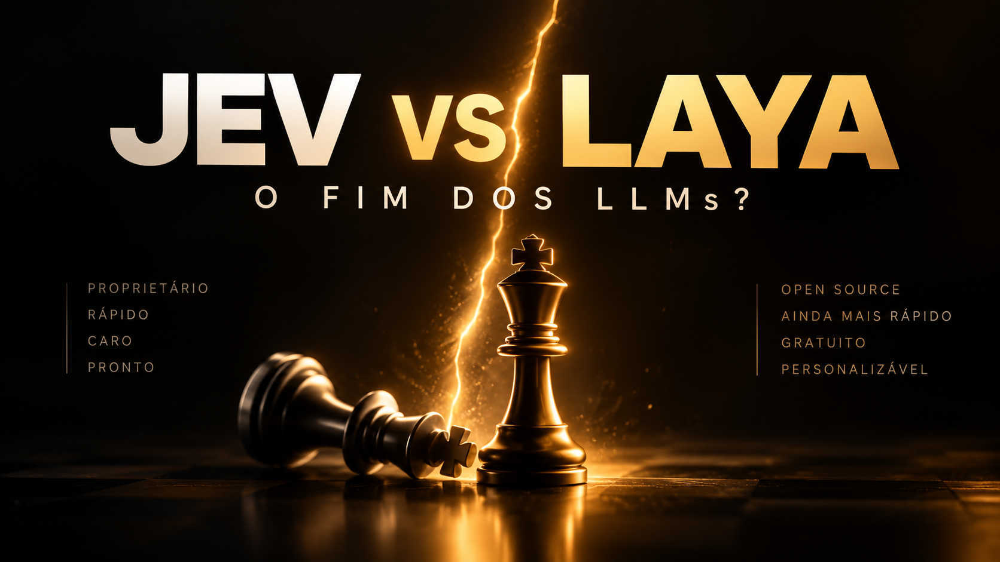

O que foi analisado.
O que foi medido.
O curso separa material editorial, afirmações dos autores, código observado e teste local.
Material fornecido
Dois textos de visão geral e comparação Jev × Laya e três imagens editoriais. Os textos deram o ponto de partida; as afirmações foram confrontadas com o repositório e as fichas atuais.
O vídeo foi baixado e transcrito integralmente com inemavox e Whisper large-v3: cerca de 26 minutos, 401 segmentos. A transcrição automática confunde ocasionalmente Laya com Leia e ModernBERT com Modern Bird; o curso usa os nomes do código.
Vídeo original no YouTubeFontes técnicas e procedência
- Código upstream no commit analisado: SDK, Router, montagem de sequência, confiança e presets.
- Relatório de benchmarks do autor: consultar condições e limitações, não tratar como medição nossa.
- Ficha multilingual e ficha typed-decisions: idiomas, escopo e calibração.
- Artigo do criador: arquitetura e história; algumas afirmações promocionais são mais fortes que a evidência atual.
- AbdelStark/jev-benchmarks e nibzard/decision-model-benchmark: medições externas de Jev com seus próprios protocolos.
- Demo oficial e pacote PyPI: referências de uso e distribuição.
Correções que orientam as aulas
| Afirmação simplificada | Leitura adotada |
|---|---|
| Não gera texto, então não erra. | Saída estruturada evita texto livre, mas pode classificar errado e ficar muito confiante. |
| Multilingual tem 135M parâmetros. | O vídeo cita uma descrição anterior; a ficha atual indica 322M totais, com mmBERT-base. |
| Router sempre escolhe o especialista. | typed-decisions requer indicação explícita ou auto_task_detection habilitado. |
| 95% de confiança = 95% de acerto. | Choice usa entropia normalizada no campo confidence; calibração exige dados. |
| Laya derrota Jev universalmente. | Fontes usam prompts, amostras e condições diferentes; treino especializado não equivale a zero-shot. |
| Fine-tuning no benchmark prova vazamento. | Treinar no split de treino é legítimo; o problema é comparar capacidades sem explicitar essa preparação. Vazamento de teste exige evidência específica. |
| Self-hosted tem custo zero. | Sem cobrança do Laya por chamada, mas com custos de hardware, energia e operação. |
Execução local observada
Checkpoint multilingual, GPU NVIDIA GB10, quatro perguntas por ticket, 16 mensagens sintéticas balanceadas. Resultado: 13 acertos (81,25%), baseline majoritária 25%, Brier multiclasses somado 0,30835 e ECE top-probability em dez bins 0,17988. A amostra é pequena e não mede confiabilidade de produção.
Erros preservados: compra de 20 licenças → billing; previsão do tempo → technical; mensagem enviada por engano → technical. Todos os resultados continuam exigindo revisão humana.
A primeira inferência medida levou 1.401 ms, mesmo depois da carga do modelo; as seguintes variaram entre cerca de 22 e 124 ms neste ensaio. São observações de uma execução, com aquecimento e outras tarefas na máquina, não um benchmark de latência controlado.
Inspecionar relatório JSON completoMateriais e recursos


Arquivos integrais de terceiros, vídeo e transcrição ficam no acervo local de pesquisa, fora do Git do curso. As aulas são autorais e apontam para as fontes originais. O curso não executou Jev nem treinou um novo checkpoint.